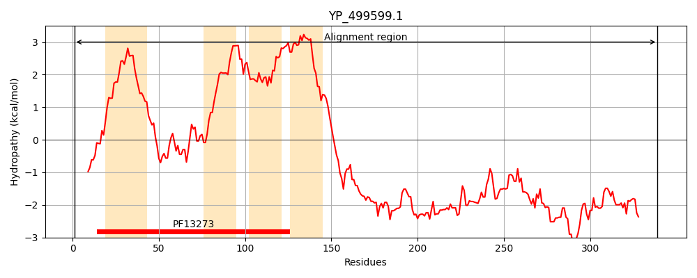
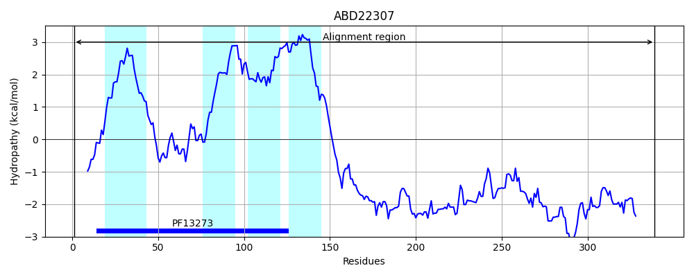
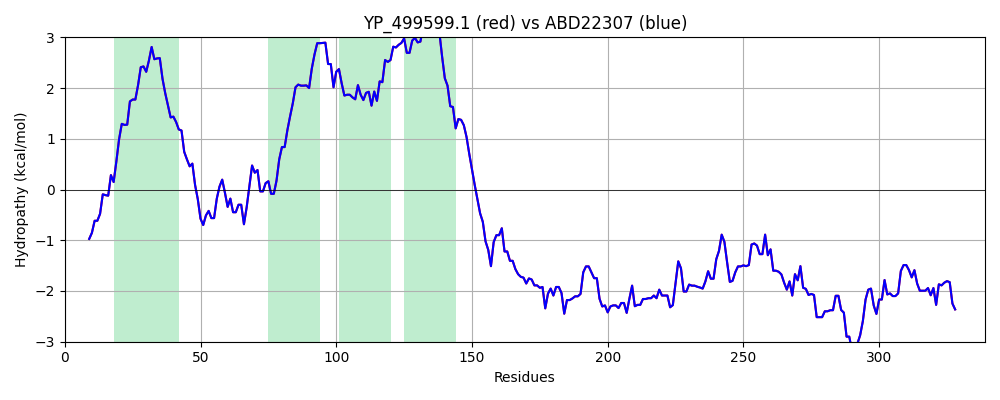

Hit Accession: ABD22307
Hit TCID: 9.B.415.1.1
Hit Description: gnl|BL_ORD_ID|1027 gnl|TC-DB|ABD22307.1|9.B.415.1.1 conserved hypothetical protein [Staphylococcus aureus subsp. aureus USA300_FPR3757]
Mach Len: 339
e:0.000000
Query TMS Count : 4
Hit TMS Count: 4
TMS-Overlap Score: 4.250000
Predicted Substrates:None
BLAST Alignment:
Score: 1739 , Bit scores: 674 bits, E-value: 0.0e+00, Alignment length: 339, Percentage identity: 100
Query: 1 MTGEQFTQIKRPVSRLTEKVLGWLCWVMLLVLTVITMFIALVSFSNNTSIANLENTLNNNAFIQQLLAGNGYNTTQFVIWLQNGIWAIIVYFIVCLLISFLALISMNIRILSGFLFLISAIVTIPLVLLIVTLIIPILFFIIAMMLFIRKDKVEMVAPQYYEEYNGPIYDYREPVYERPQPKDDYYDVPKYEKELDKSNTVYDQEQERDKYDQFPKRAVESEYNHDERTEEEPSVLSRQAKYKQKSTEELGIEDDGYYAEPEVDPKELKAQQKREKAEIKAKKKEKRKAYNQRMKERRKNQPSAVSQRRMNFEERRQIYNNDISEERNSSEVKDKKEQE 339
MTGEQFTQIKRPVSRLTEKVLGWLCWVMLLVLTVITMFIALVSFSNNTSIANLENTLNNNAFIQQLLAGNGYNTTQFVIWLQNGIWAIIVYFIVCLLISFLALISMNIRILSGFLFLISAIVTIPLVLLIVTLIIPILFFIIAMMLFIRKDKVEMVAPQYYEEYNGPIYDYREPVYERPQPKDDYYDVPKYEKELDKSNTVYDQEQERDKYDQFPKRAVESEYNHDERTEEEPSVLSRQAKYKQKSTEELGIEDDGYYAEPEVDPKELKAQQKREKAEIKAKKKEKRKAYNQRMKERRKNQPSAVSQRRMNFEERRQIYNNDISEERNSSEVKDKKEQE
Sbjct: 1 MTGEQFTQIKRPVSRLTEKVLGWLCWVMLLVLTVITMFIALVSFSNNTSIANLENTLNNNAFIQQLLAGNGYNTTQFVIWLQNGIWAIIVYFIVCLLISFLALISMNIRILSGFLFLISAIVTIPLVLLIVTLIIPILFFIIAMMLFIRKDKVEMVAPQYYEEYNGPIYDYREPVYERPQPKDDYYDVPKYEKELDKSNTVYDQEQERDKYDQFPKRAVESEYNHDERTEEEPSVLSRQAKYKQKSTEELGIEDDGYYAEPEVDPKELKAQQKREKAEIKAKKKEKRKAYNQRMKERRKNQPSAVSQRRMNFEERRQIYNNDISEERNSSEVKDKKEQE 339 | Protein Hydropathy Plots: |
|---|
|  |  |
Pairwise Alignment-Hydropathy Plot:
|
|---|
|  |